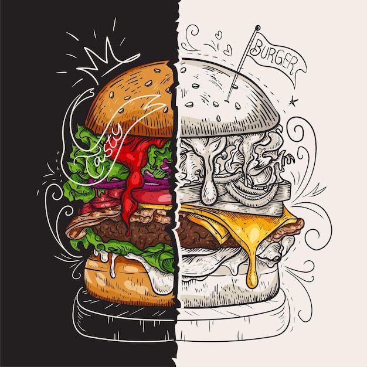
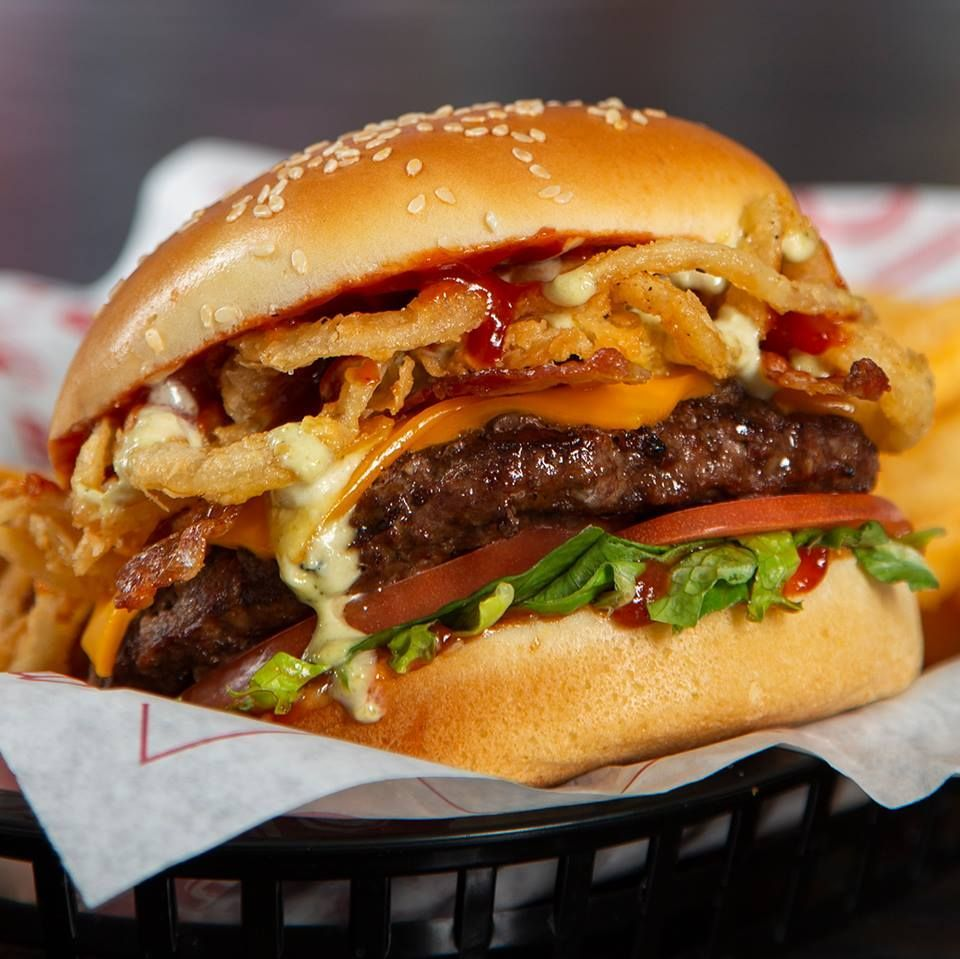
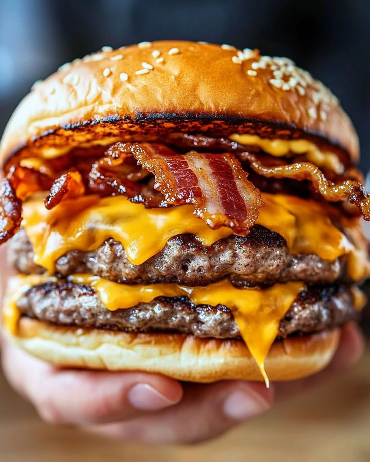
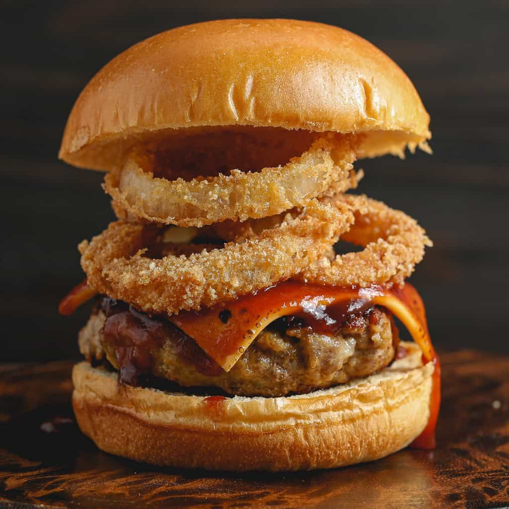
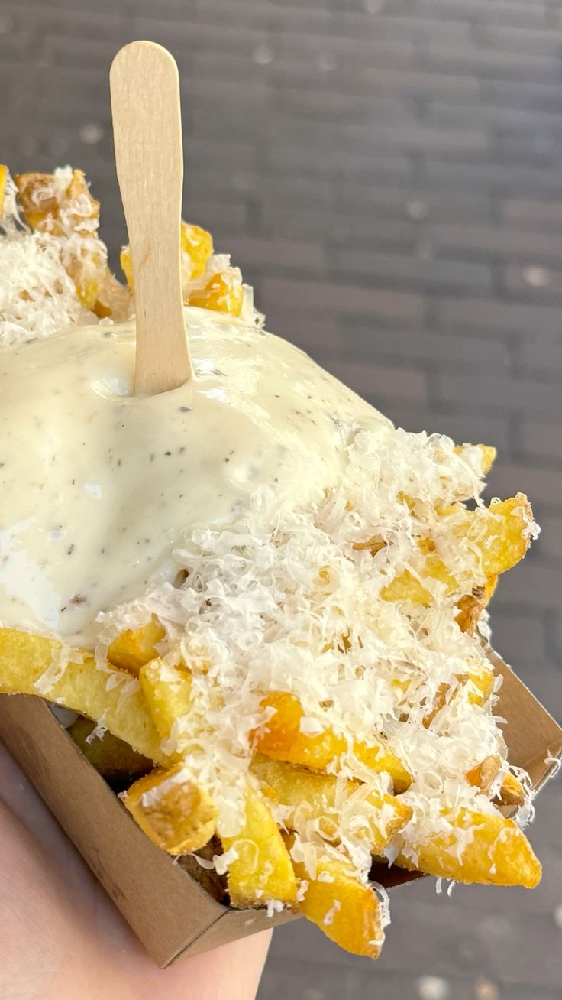
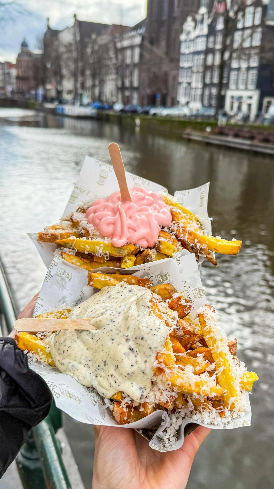

Burger
A comforting classic that feels warm, familiar, and deeply satisfying with every slow bite.

Cheeseburger
Rich and indulgent, built around softness and depth, offering pure comfort without excess.
Double Patty Burger
Bold, hearty, and confident, made for moments that call for something extra.

Onion Ring Burger
A playful contrast of textures that feels indulgent, yet carefully balanced.
Classic Salted Fries
Light, golden, and timeless, made to be enjoyed slowly or shared easily.

Fries
Warm and grounding, the kind of comfort that never needs explanation.

Golden Fries
Simple pleasures done right, offering a quiet sense of satisfaction.
Peri Peri Fries
A gentle heat that lifts the experience, adding energy without overpowering.
Salsa Fries
Bright, lively, and expressive, made for those who enjoy layered flavors.
← Back to Home